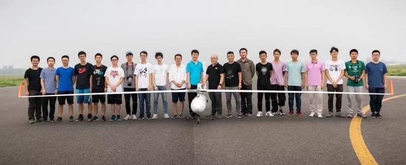
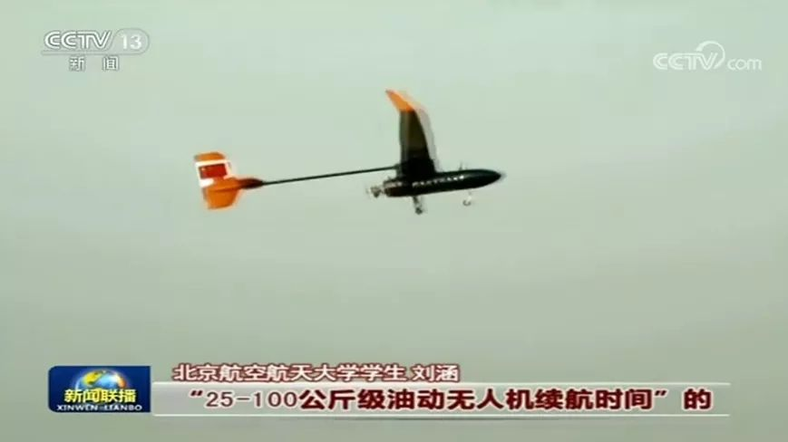

← 本科竞赛
2019 年 10 月 · 北航「冯如三号」项目组 · 续航 30 小时 06 分 42 秒

大二暑假加入冯如三号项目组，负责总体协调和飞机装配。项目组用无人机长航时飞行创世界纪录的方式，为新中国成立 70 周年献礼。
2019 年 10 月 3 日，冯如三号在安阳连续飞行 30 小时 06 分 42 秒，经国际航空联合会认证为这一级别的续航时间世界纪录。央视《新闻联播》做了报道。
